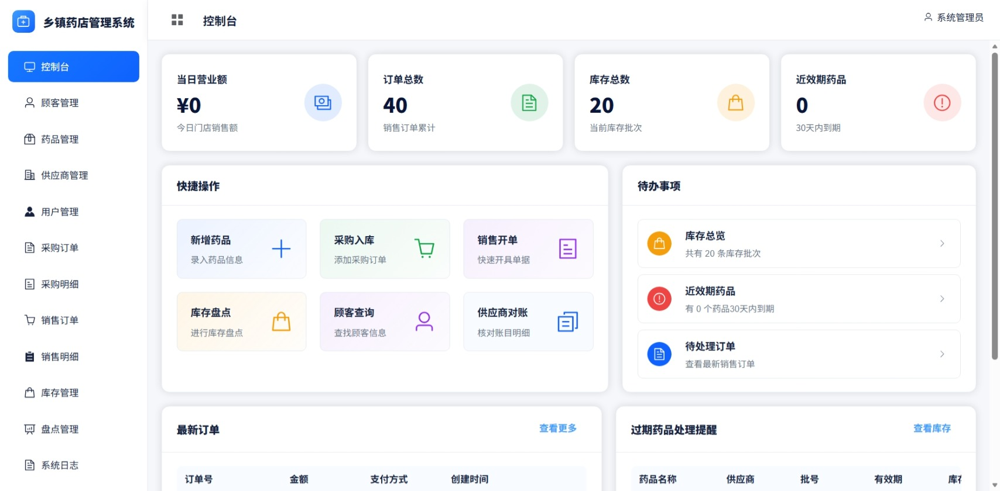
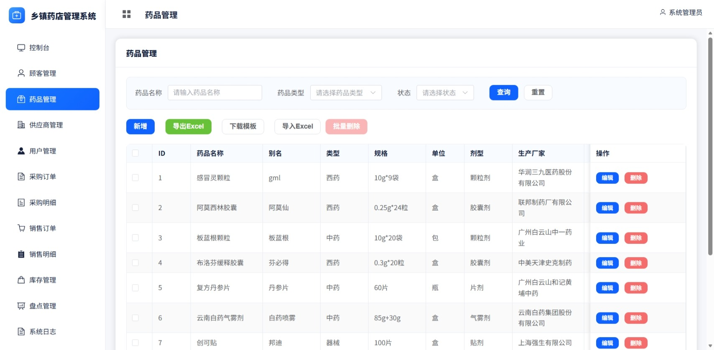
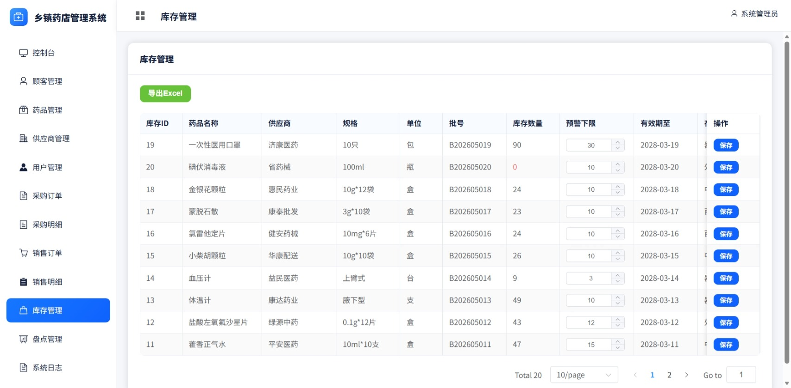
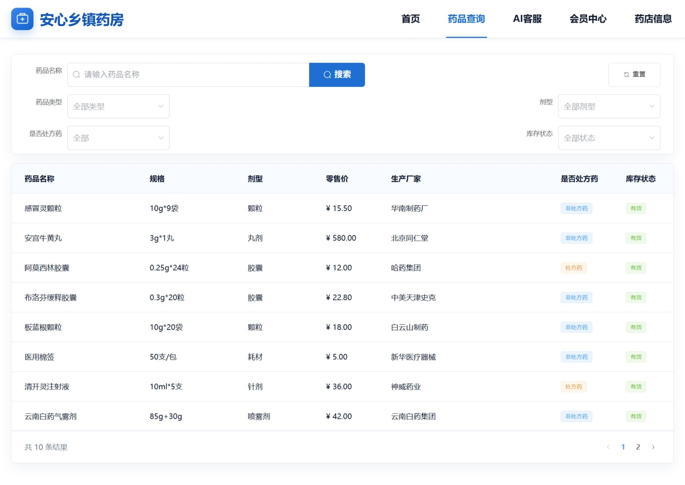
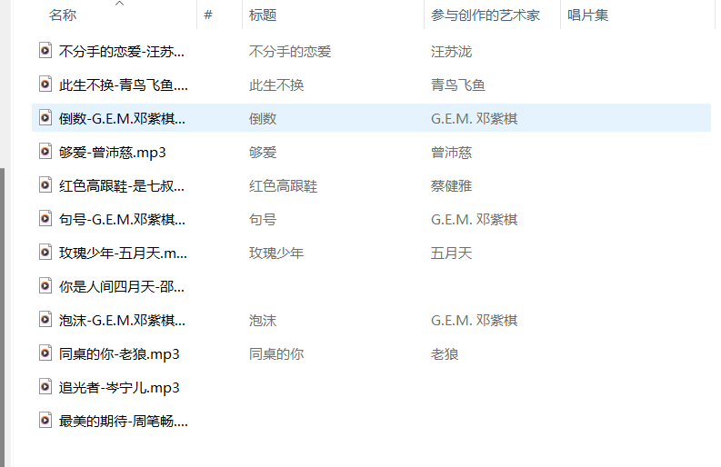
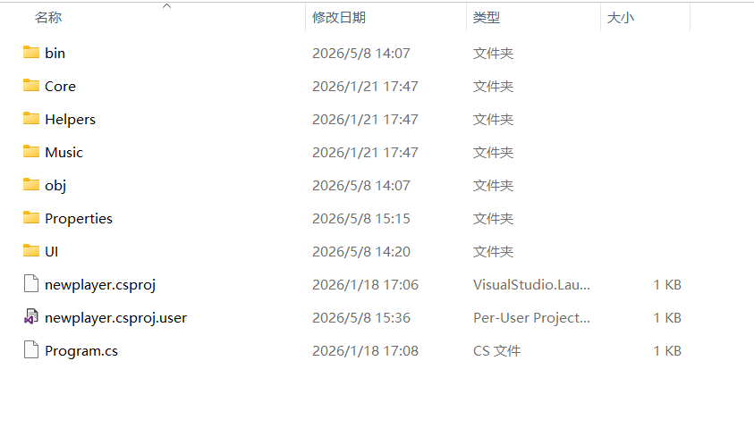

admin.yaoliumu.me
药店管理系统管理端前端。测试账号：demo，测试密码：demo。
Java 后端开发 / 前后端分离 Web 开发
软件工程本科在读，专注 Java 后端与前后端分离项目开发。当前作品集重点展示药店管理系统管理端前端和用户端。

药店管理系统管理端前端。测试账号：demo，测试密码：demo。
药店管理系统用户端，展示药品查询、药店信息、会员中心和 AI 客服等功能。
NewPlayer 轻量级本地音乐播放器 Gitee Release 下载链接。
软件工程本科在读，专注后端开发方向，熟悉 Java / Spring Boot / MySQL 等核心技术，具备完整的前后端分离项目开发、部署和线上展示经验。
2023.09 - 2027.06
在校期间持续完成 Web 项目与桌面应用实践，熟悉从需求分析、数据库设计、接口开发、前端联调到 Nginx 部署的完整流程。
Spring Boot 3 / Spring Security / MyBatis-Plus / MySQL / Vue 3 / Element Plus / Nginx
C# / .NET 8 / Windows Forms / NAudio
账号：demo
密码：demo
仅用于测试访问管理端前端(只读)。
当前总订单
当前库存批次
30 天内到期
待处理事项
药品管理、采购管理、销售订单、库存管理、库存盘点等。
药品查询、会员中心、药店信息展示和规则型 AI 客服。
REST API、业务分层、统一响应处理、AOP 日志和缓存。
Nginx 托管前端静态资源；后端代理仅作为内部部署能力，不在作品集页面公开展示。
页面只展示访问者需要进入的前端入口，后端接口、服务器内部路径、数据库等信息不在作品集中公开。



面向 Windows 的本地 MP3 播放器，不内置、不分发任何音乐资源，用户自行准备合法来源的本地音乐文件。
基于 Windows Forms 和 NAudio 开发，支持扫描本地 Music 文件夹中的 MP3 文件，并提供播放、暂停、上一曲、下一曲、顺序播放、随机播放、单曲循环、音量调节和快捷键控制等功能。


音乐播放器发布包已通过 Gitee v1.0.0 Release 提供，页面不再展示额外的站点下载目录。
推荐从 Gitee Release 获取最新发布包。